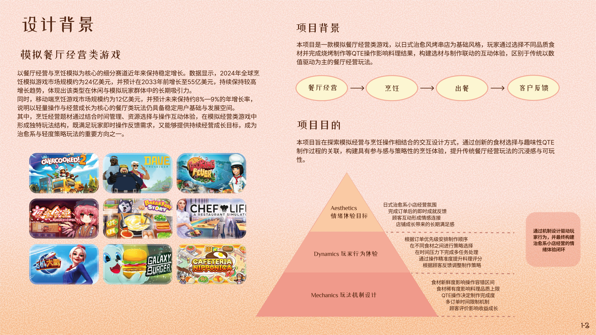
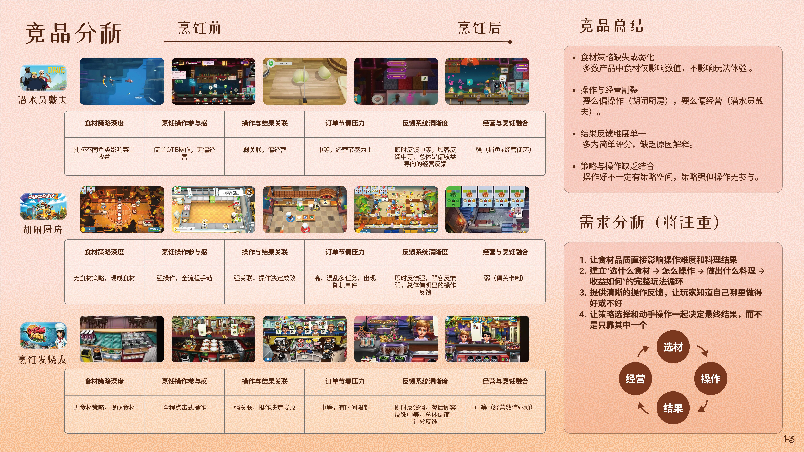
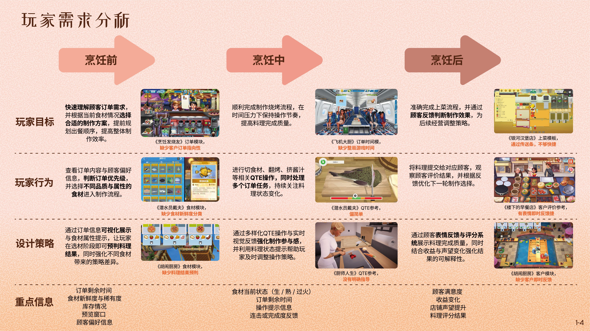
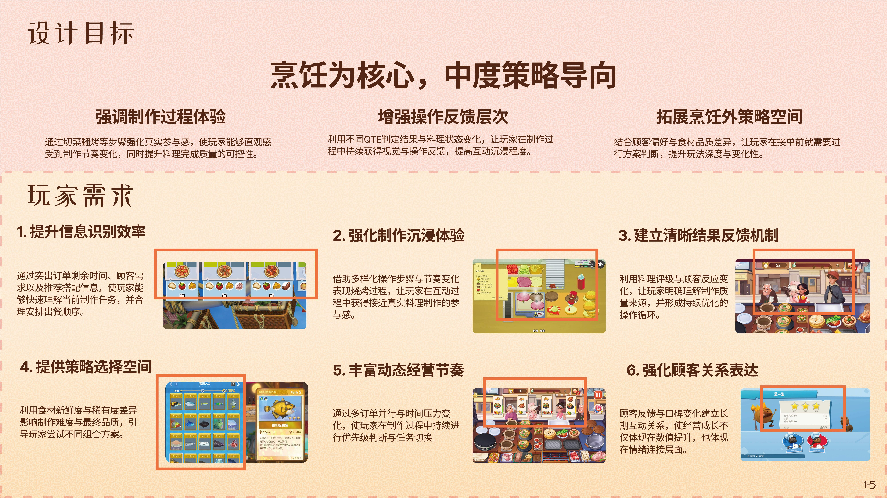
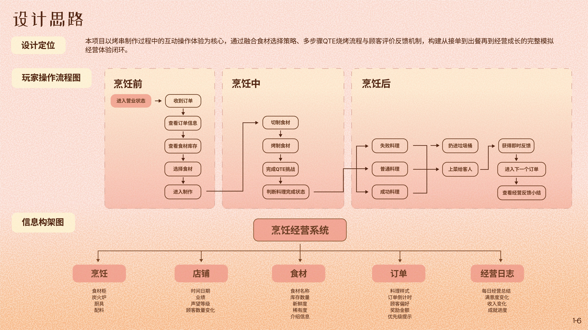
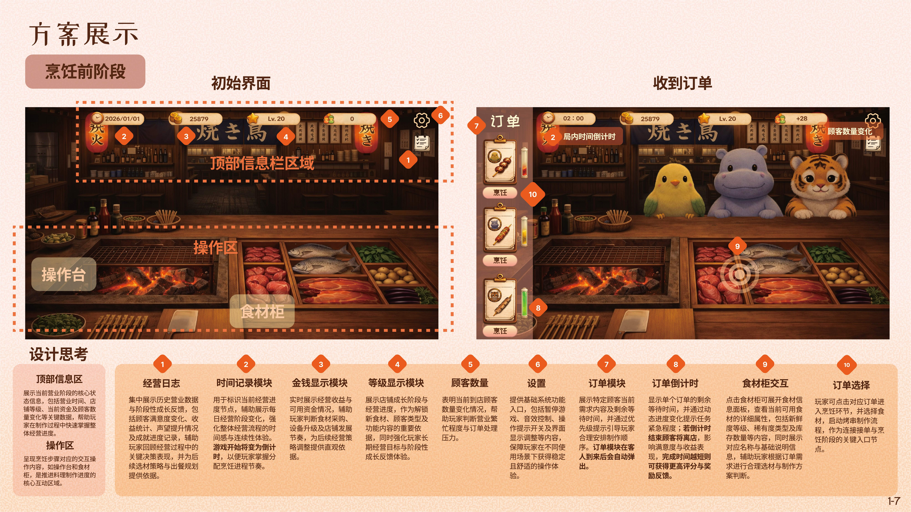
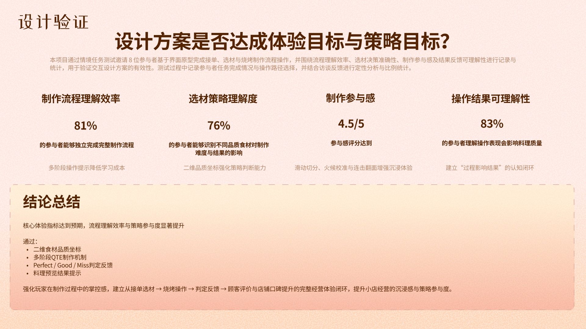

本项目是一款以日式治愈风格为核心的烤串店模拟经营游戏。玩家将在温暖安静的街角小 店中经营一家炭火串烧店，通过接单、选材与烧烤制作等流程，为不同顾客提供料理并逐 步提升店铺口碑与收益。 游戏在保留经营体验的基础上，重点强化烹饪过程的互动参与：通过食材品质影响操作难度，结合QTE制作流程与顾客反馈机制，构建从选材到出餐的完整玩法闭环，提升整体沉浸感与策略体验。
通过本项目，我设计了将烹饪制作流程与模拟经营玩法结合的交互体验机制，构建包含食材品质反馈、QTE制作流程与顾客评价机制的完整玩法闭环，强化玩家在制作过程中的参与感与策略体验。项目进一步提升了我在玩法交互结构设计、体验节奏控制以及概念驱动型交互系统原型构建方面的能力。






